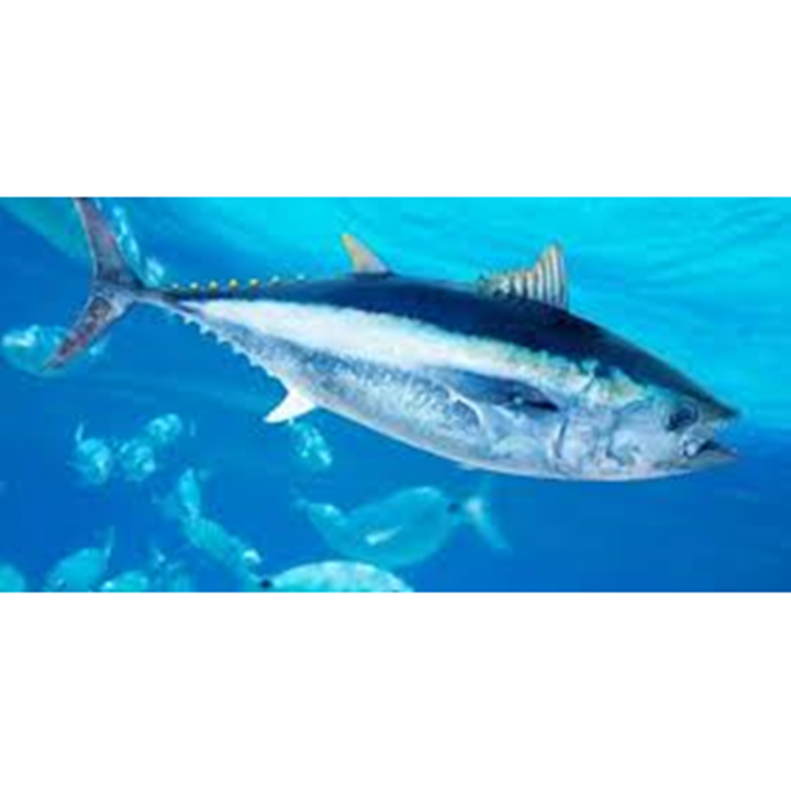

Ikan Tuna
Ikan tuna memang memiliki segudang manfaat mulai dari lemak, daging hingga minyaknya. Manfaat minyak ikan ternyata juga dapat membantu menjaga kesehatan dan nutrisi yang dibutuhkan oleh tubuh. Apalagi manfaat dari daging ikan tuna itu sendiri yang cukup banyak sekali. Namun perlu diperhatikan saat konsumsi ikan tuna, karena tidak sedikit yang mengandung Merkuri akibat lingkungan air laut tercemar.
Seperti yang telah diketahui bahwa ikan tuna merupakan jenis ikan air asin dari keluarga Scombridae dan Genus Thunnus, dan termasuk salah satu ikan paling populer di belahan dunia. Maka tak heran jika jenis ikan yang satu ini seringkali dikalengkan untuk diproduksi sebagai bahan makanan yang bergizi. Tentu saja ikan tuna segar jauh lebih bergizi karena kaya akan omega-3.
Kandungan Ikan Tuna (dalam 100 gram)
| Protein (g) | Kalori (Kal) | Lemak (g) | Besi (mg) | Kalsium (mg) | Fosfor (mg) | Vit A (SI) | Vit B1 (mg) | Kolesterol (mg) | BDD (%) |
|---|---|---|---|---|---|---|---|---|---|
| 23,2 | 179 | 11,4 | 2,4 | 16,9 | 251 | 87,8 | 4,6 | 49 | 100 |
Manfaat Ikan Tuna
- Sumber Protein Tubuh
- Mencegah Stroke
- Menurunkan Kadar Trigliserida
- Mengurangi Mencegah Obesitas
- Sistem Imunitas Tubuh
Jika bicara mengenai protein maka yang terbayang dalam otak kita mungkin daging dan telur, namun ternyata ikan tuna juga memiliki kandungan protein yang cukup tinggi. Kandungan protein ini baik untuk membantu membantu menjaga otot-otot agar tetap kuat. Protein juga baik untuk darah, kulit, rambut dan kuku.
Ikan Tuna dapat membantu anda menghindari risiko mengalami stroke. Sebuah studi terbaru menunjukkan bahwa orang dewasa yang mengkonsumsi 1-4 porsi ikan sebagai bagian dari pola makan mereka memiliki risiko 27 persen lebih rendah terserang stroke iskemik. Lima atau lebih porsi ikan per minggu mengurangi risiko stroke hingga 30 persen.
Trigliserida merupakan penyusun utama minyak nabati dan lemak hewani. Dengan dua porsi tuna seminggu, Anda dapat menurunkan kadar trigliserida Anda. Mengapa itu hal ini sangat baik untuk kesehatan? Trigliserida dalam aliran darah menunjukkan jumlah lemak yang akan diproses. Jika Anda memiliki trigliserida tingkat tinggi, Anda mungkin juga mengalami tingginya low-density lipoprotein (LDL), atau “kolesterol jahat”, dan rendahnya tingkat high-density lipoproteins (HDL), atau “protein yang baik.” Pada dasarnya kandungan HDL diharapkan lebih tinggi dan LDL dapat rendah, untuk itu makan tuna untuk menurunkan tingkat trigliserida Anda adalah salah satu cara untuk mencapai keseimbangan ini.
Manfaat lain dari asam lemak omega-3 yang ditemukan dalam ikan tuna adalah kemampuannya untuk mengurangi risiko obesitas sekaligus meningkatkan respon insulin tubuh. Asam lemak omega-3 mampu merangsang hormon yang disebut leptin, yang membantu metabolisme tubuh dan turut mengatur berat badan dan makanan asupan tubuh. Tuna juga rendah kalori dan memiliki kandungan lemak baik, makanan ini cukup aman dikonsumsi bagi anda yang khawatir obesitas.
Ikan tuna merupakan sumber Selenium, antioksidan yang membantu meningkatkan sistem kekebalan tubuh Manusia. Sistem kekebalan tubuh adalah bagian penting dari tubuh yang merupakan bagian integral untuk melawan penyakit dan infeksi.